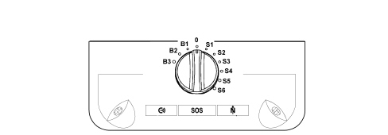
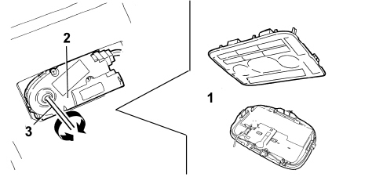
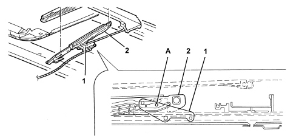

SUN ROOF
The sunroof, available as an option on this car, is a conventional system consisting of a mobile glass panel that swivels upwards or slides across to stow away out of sight.
When closed, the glass allows daylight to enter and allows car passengers to see out. When open, it opens the roof compartment to the entire width of the glass panel.
During opening, the mobile panel slides in a housing between the roof panel and ceiling.
SPECIFICATIONS
The sun-roof specifically consists of the following:
- a frame consisting of two aluminium guides in which the movement mechanisms slide and two crossmembers, plastic at the front and metal at the rear, joined to the side guides;
- A system of right and left mechanisms, fitted in the aluminium guides, for moving the front glass panel, operated by the electric motor by means of a coiled metal cable.
- a sun blind with manual movement mechanism equipped with handle and air circulation slots;
- a 4 mm thick toughened glass panel with low energy and light transmission value;
- a direct current motor with a motor reduction unit, a magnetic wheel located on the crankshaft, one or more Hall effect sensors and a connection to the vehicle wiring.
- an electronic control unit;
- a rotating selector to obtain different opening/closure positions, with an additional inhibition position.
COMPOSITION
The diagram illustrates the sun roof components

1 - Thermal tinted glass
2 - Seal
3 - Sun blind
4 - Drainage pipe
5 - Drainage channel
6 - Deflector
7 - Guide mechanisms
8 - Motor
9 - Potentiometer
10 - Flexible racks
11 - Supporting mechanism
12 - Mechanism shield
Sun blind
The light intensity inside the passenger compartment can be adjsuted by a sun blind.
The hand-operated sliding blind in cloth-trimmed UP is equipped with mobile pads with play take-up components that ensure noise is absent under all opening and driving conditions. A panel on the front edge includes a handle and ventilation slots.
OPERATION
The sun-roof is operated by an opening/closure preselector in the front central courtesy light.
The operating strategy described below is achieved by operating an electric motor managed by an electronic control unit.
Manual control (by selector): when the control selector is positioned in one of the set positions, the roof is moved in the following cases:
- at Key-ON;
- during the first 2 minutes after Key-OFF, or until one of the doors is opened.
Remote control: opening/closure by means of remote control (active with Key-Off): the control unit receives a control signal to move the roof from the Body Computer

|
the automatic closure movement can be interrupted at any time by pressing the selector upwards (inhibition position) or by altering the position of the selector (the roof will lock in this case. It will be possible to give a new command 10 secs later using the remote control or, in the Key On position, using the manual selector). |
|
|
|
The antipinch function is always active during sliding/tilting movement operations (including operations commanded by a remote unit).
|
|
Do not disconnect the battery or the sun roof power supply whilst it is moving. If this is the case, the control unit loses its memory and it must be restored by following the procedure described in the appropriate paragraph. |
ANTIPINCH FUNCTION
During closure operations, an antipinch protection is in operation throughout the roof travel (except for the last 4 mm).
In particular, the antipinch protection is always active during operations controlled by the remote control.
During operations controlled by the manual selector, it is possible to use the Inhibit position (press the selector) to allow the roof to be closed without the antipinch protection.
The antipinch system managed by the electronic control unit protects the occupants against manoeuvres from inside the car and complies with the requirements of Directive 2000/4/EC. It is active during horizontal closure (front edge) and vertical closure (rear edge) of the panel after encountering an obstacle (e.g. finger, hand). The possibility of pinching in the side areas of the panel is prevented by adopting side guards that prevent access to high-risk areas.
Once an obstacle is detected, panel movement is immediately stopped. The stalled position cannot be maintained for longer than 20 milliseconds (to safeguard the user against discomfort) before the direction of motion is reversed to return to the previous position.
During the horizontal closure movement, it is active throughout the travel (if it had been opened by more than 4 mm). If it meets an obstacle on the front side of the glass panel, it guarantees the reversal of motion for a travel of 100 mm from the movement reversal point.
During the vertical closure movement, it is active throughout the travel (if previously opened by more than 4mm from the seal). After meeting an obstacle on the rear side of the panel, it ensures the direction of motion is reversed to the end travel position.
In both cases, the reversal load is less than 100 N, as required by Directive 2000/4/EC.
Selector

0 - Roof closed position
- B1 - Minimum tilt position
- B3 - Maximum tilt position
- S1 - Minimum sliding position
- S6 - Maximum sliding position
The manual movement selector can be adjusted:
- by turning the knob in an anti-clockwise direction, to three pre-defined heights with the roof tilted to form a spoiler from "B1 to B3";
- by turning the knob in a clockwise direction, in six pre-defined sliding, concealed positions from "S1 to S6";
- position "0" corresponding to roof closed. This position can also be recognized by the longer duration of the click;
- in the "inhibition" position (all the selector connections are earthed) by pressing the selector in a vertical direction.
Control unit
The movement of the sun roof is managed by an electronic controlunit, housed in the casing on the motor, which processes the signals coming from the selector or the remote command, via the Body Computer, also controlling the safety protection function.
This function is managed by the control unit which receives information from both the position and speed Hall effect sensors, on the motor. Following the detection of a force of more than a certain level, corresponding to a greater current absorption and notified as being a possible obstacle, the control unit commands the immediate stopping and reversal of movement by about 10 cm.
The control unit also receives a vehicle speed signal because, depending on the speed, through the effect of the vacuum, the force required for closing the roof changes and in certain circumstances this could be perceived as an impediment. The control unit therefore uses this signal in order to mistakenly stop the movement.
Resetting control unit memory
If there is a break in the power supply (e.g. battery disconnected) whilst the sun roof is moving, or even within 5 seconds after the roof has actually stopped moving, the positions will be lost from the electronic control unit memory.
To restore the memory, carry out the procedure described, working with Key ON:
- place the selector in the maximum tilt position (end of rotation in anti-clockwise direction position B3);
- press the selector vertically keeping it in this position until the sun roof has come to a halt in the maximum tilted position;
- release the selector and, within five seconds, press the selector again, keeping it pressed;
- wait until the roof completes a full travel from maximum tilt position to maximum open, concealed position and then from maximum concealed opening to closed;
- release the selector and return it to the roof closed position (rotating it through three clicks in a clockwise direction);
at this point the control unit roof position memory is reset.

|
The memory reset procedure has to be carried out even if there are no impediments and there are problems with the sliding of the roof incorrectly perceived by the control unit as an obstacle. |
Emergency manoeuvre

1 - Front courtesy light and volumetric sensors
2 - Electric contol motor
3 - Operating key
If the electric device for moving the roof fails, the sun roof can be moved manually proceeding as described below:
- remove the central courtesy light and withdraw the volumetric sensor mount;
- introduce the 4mm Allen key supplied into the housing in the motor;
- turn the key in a clockwise direction to open the roof or in an anti-clockwise direction to close it.
Alignment
During repair operations on the vehicle which involve removing the sun roof and the motor at the same time, when refitting, if it is unsure whether the position of the sliding guides has been maintained, before refitting the parts, the two guides must be aligned because the alignment of the sun roof can no longer be guaranteed and this could result in malfunctions and wind noise.
To restore the alignment of the guides with the motor disconnected, follow the procedure described below:
-
manually place the supporting guides in the fully forward position on both sides, checking that the sliding is complete;
-
place the support levers in the (roof closed) position;
-
align the openings for the drive guides with the blind opening in the support levers using two 3mm diameter pins (one on each side) as illustrated in the diagram below;
View of guide alignment mode.

1 - Supporting lever
2 - Drive guide
A - Reference pin introduction point
Proceed as follows to align the guides:
-
refit the motor, keeping the pins in position
-
remove the alignment pins;
-
reconnect the motor to the electrical system and the selector to the control unit;
-
refit the sun roof on the supports, suitably adjusting their position to ensure that the alignment is correct and the seal perfect;
-
carry out the control unit memory resetting procedure described in the relevant paragraph;
-
restore the guide shield covers.
Alignment procedure at the bench
With the sun roof assembly at the bench, following a procedure which has involved disconnecting the motor or the moving or sliding parts, to align the sun roof guides and position the moving parts correctly, follow the procedure described below:
-
fit the detached parts with the exception of the motor;
-
manually place the supporting guides in the fully forward position on both sides, checking that the sliding is complete;
-
place the support levers in the (roof closed) position;
-
align the openings for the drive guides with the blind opening in the support levers using two 3mm diameter pins (one on each side) as illustrated in the diagram above;
-
refit the motor, keeping the pins in position, then remove the alignment pins;
-
refit the sun roof on the supports, suitably adjusting their position to ensure that the alignment is correct and the seal perfect,
-
refit the sun roof on the vehicle and carry out the control unit memory resetting procedure, as described in the relevant paragraph.